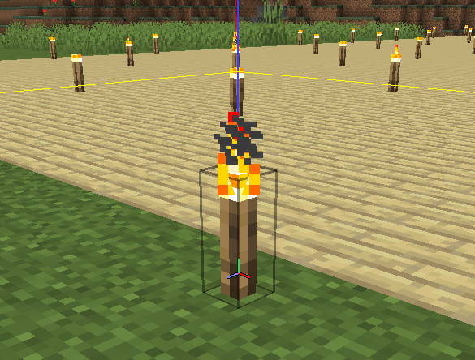
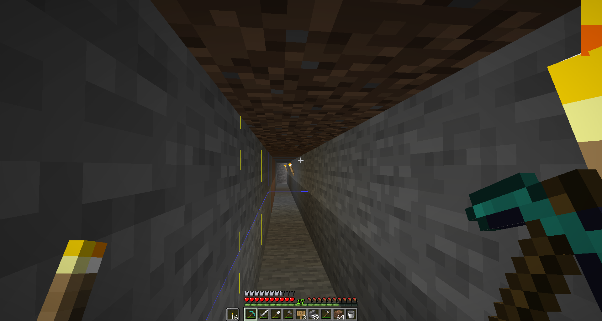

Any torch arrangements shall start at the corner of a chunk, such that it is the corner with the lowest X and Z coordinate.
This image shows a torch placed in the corner of a chunk. (Use F3+G to show chunk boundaries). The blue, green and red symbol shows that the player is facing in the negative X and negative Z direction.
Any torch placed within a strip mine MUST be situated on the LEFT hand side of the strip mine. Torches found on the right hand side means the player is travelling in the reverse direction.
This image shows torches on the right hand side. Players whom encounter torches on the right can use this information to navigate towards the exit.
It is recommended to place your torches every time the block light level reaches 2. This maximises torch efficiency, without reducing safety in the possibility of mob spawning.